산림기사 (2020-08-22 기출문제)
1과목: 조림학
1. 이태리포플러와 유연관계가 가장 가까운 수종은?
- 왕버들
- 황철나무
- 미루나무
- 은수원사시나무
(정답률: 69%)

2. 순림에 대한 설명으로 옳은 것은?
- 입지 자원을 골고루 이용할 수 있다.
- 경제적으로 가치 있는 나무를 대량으로 생산할 수 있다.
- 숲의 구성이 단조로우며 병충해, 풍해에 대한 저항력이 강하다.
- 침엽수로만 형성된 순림에서는 임지의 악화가 초래되는 일이 없다.
(정답률: 82%)
3. 소나무를 양묘하려고 채종을 하였다. 열매를 탈각하여 5kg을 얻었으며, 정선하여 얻은 순정종자는 4.5kg이었다. 이 종자의 발아율을 조사하니 80%였다면 이 종자의 효율은?
- 64%
- 72%
- 80%
- 90%
(정답률: 80%)
4. 간벌에 대한 설명으로 옳지 않은 것은?
- 정성간벌은 임목본수와 현존량으로 결정한다.
- 수액 이동 정지기인 겨울과 봄에 실시하는 것이 좋다.
- 수목의 생장량이 증가함에 따라 생육 공간 조절을 위해 실시한다.
- 지위가 ‘상’이면 활엽수종의 간벌 개시 시기는 임령이 20~30년일 때부터이다.
(정답률: 56%)
5. 묘목의 연령표시에 대한 설명으로 옳지 않은 것은?
- 1/2묘 : 뿌리는 1년, 줄기는 2년된 삽목묘
- 1-0묘 : 판갈이를 하지 않고 1년이 경과한 실생 묘목
- 1-1묘 : 파종상에서 1년, 판갈이하여 1년이 경과된 2년생 묘목
- 2-1-1묘 : 파종상에서 2년, 판갈이하여 1년, 다시 판갈이하여 1년을 지낸 4년생 묘목
(정답률: 78%)
6. 일반적으로 파종 1년 후에 판갈이 작업을 실시하는 것이 좋은 수종으로만 올바르게 나열한 것은?
- 삼나무, 전나무
- 소나무, 잣나무
- 소나무, 일본잎갈나무
- 전나무, 독일가문비나무
(정답률: 45%)
7. 종자의 후숙이 필요하지 않는 수종은?
- Salix koreensis
- Tilia amurensis
- Cornus officinalis
- Robinia pseudoacacia
(정답률: 53%)
8. 양료간에 흡수를 상호 촉진하는 비료 성분으로 올바르게 짝지어진 것은?
- 철 - 망간
- 칼륨 - 칼슘
- 인산 - 마그네슘
- 칼륨 - 마그네슘
(정답률: 59%)
9. 택벌작업에 대한 설명으로 옳지 않은 것은?
- 심미적 가치가 가장 높다.
- 음수 수종의 갱신에 적합하다.
- 일시의 벌채량이 많으므로 경제상 효율적이다.
- 소면적 임지에 보속생산을 하는데 가장 적합한 방법이다.
(정답률: 68%)
10. 일반적으로 연료재와 소경재, 일반용재를 동일 임지에서 생산하는 산림작업종은?
- 군상개벌
- 모수작업
- 왜림작업
- 중림작업
(정답률: 61%)
11. 빛과 관련된 수목 생리에 대한 설명으로 옳은 것은?
- 우리나라에서 자라는 대부분의 활엽수는 C4 식물군에 속한다.
- 엽록체 내에서 광에너지를 이용한 광반응이 일어나는 곳은 스트로마(Stroma)이다.
- 내음성은 동일 수종이라도 수목의 연령이나 생육조건 등에 따라서 변할 수 있다.
- 수목 한 개체 내에서는 양엽이나 음엽에 상관없이 광보상점이나 광포화점이 동일하다.
(정답률: 74%)
12. 인공조림의 특징으로 옳은 것은?
- 동령단순림 형성이 많다.
- 주로 택벌작업지에 실시된다.
- 다양한 규격의 목재 생산이 용이하다.
- 천연갱신에 비해 성숙림이 늦게 이루어진다.
(정답률: 75%)
13. 환원법에 의한 종자활력검사 방법에 대한 설명으로 옳지 않은 것은?
- 단기간 내에 실시할 수 있다.
- 휴면 종자에는 적용이 어렵다.
- 테트라졸륨 대신에 테룰루산칼륨도 사용한다.
- 침엽수의 종자는 배와 배유가 함께 염색되도록한다.
(정답률: 71%)
14. 토양 수분에 대한 설명으로 옳지 않은 것은?
- 토양의 모세관수는 수목이 이용할 수 있다.
- 토양 수분이 포화 상태일 때의 pF는 3.8이다.
- 토양의 수분포텐셜은 포화 상태로부터 건조해 짐에 따라 낮아진다.
- 위조점은 토양 수분의 부족으로 수목이 시들기 시작하는 수분상태를 말한다.
(정답률: 61%)
15. 생가지치기를 하여도 부후의 위험성이 거의 없는 수종으로만 올바르게 나열한 것은?
- 편백, 포플러
- 벚나무, 느릅나무
- 삼나무, 물푸레나무
- 자작나무, 단풍나무
(정답률: 63%)
16. 근삽에 의한 무성번식 방법을 적용하는데 가장 적합한 수종은?
- 소나무
- 벚나무
- 밤나무
- 오동나무
(정답률: 45%)
17. 복층림 조성에 대한 설명으로 옳지 않은 것은?
- 경관 유지 및 관리에 적절하다.
- 벌채 시 설비비와 반출경비가 많이 절약된다.
- 임목의 수확 기간이 길어져서 대경목 생산이 가능하다.
- 생장이 균일하여 연륜폭이 균등하고 치밀한 목재를 생산할 수 있다.
(정답률: 63%)
18. 우리나라에서 한대림의 특징 수종이 아닌 것은?
- Larix olgensis
- Picea jezoensis
- Taxus cuspidata
- Quercus myrsinaefolia
(정답률: 51%)
19. 수목 잎의 기공에 대한 설명으로 옳지 않은 것은?
- 잎의 수분포텐셜이 낮아지면 기공이 닫힌다.
- 온도가 30℃ 이상으로 상승하면 기공이 닫힌다.
- 기공이 열리는데 필요한 광도는 순광합성이 가능한 광도이면 된다.
- 엽육 세포 내부의 이산화탄소 농도가 높아지면 기공이 열린다.
(정답률: 59%)
20. 쌍떡잎식물에 대한 설명으로 옳지 않은 것은?
- 잎은 그물맥이다.
- 떡잎이 두 장이다.
- 원뿌리에 곁뿌리가 붙어있다.
- 관다발이 줄기에 산재되어 있다.
(정답률: 64%)
2과목: 산림보호학
21. 점박이응애에 대한 설명으로 옳지 않은 것은?
- 습한 기후 조건에서 대발생하기도 한다.
- 1년에 8~10회 발생하고, 주로 암컷 성충이 수피 밑에서 월동한다.
- 농약을 지속적으로 사용한 수목에서 대발생하는 경우가 있다.
- 잎 뒷면에서 즙액을 빨아먹으므로 피해를 입은 잎에 작은 반점이 생긴다.
(정답률: 44%)
22. 모잘록병 방제방법으로 옳지 않은 것은?
- 밀식되지 않도록 파종량을 적게 한다.
- 파종 전에 종자와 파종상의 토양을 소독한다.
- 피해가 발생하면 디노테퓨란 액제를 살포한다.
- 질소질 비료를 과용하지 않고 완숙퇴비를 사용한다.
(정답률: 66%)
23. 유충시기에 천공성을 가진 해충은?
- 혹벌류
- 하늘소류
- 노린재류
- 무당벌레류
(정답률: 71%)
24. 버즘나무방패벌레에 대한 설명으로 옳지 않은 것은?
- 1995년경 국내에 첫 발생이 확인되었다.
- 피해 잎의 뒷면에는 검정색 배설물과 탈피각이 붙어있다.
- 성충으로 월동하고, 월동한 성충은 봄에 무더기로 산란한다.
- 주로 버즘나무와 철쭉류의 잎을 가해하여 피해를 주는 흡즙성 해충이다.
(정답률: 52%)
25. 우리나라에서 수목에 피해를 주는 주요 겨우살이가 아닌 것은?
- 붉은겨우살이
- 소나무겨우살이
- 참나무겨우살이
- 동백나무겨우살이
(정답률: 54%)
26. 오동나무 빗자루병의 병원체는?
- 균 류
- 세 균
- 바이러스
- 파이토플라스마
(정답률: 75%)
27. 포플러류 모자이크병 방제방법으로 가장 효과적인 것은?
- 새삼을 제거하여 감염경로를 차단한다.
- 접목 및 꺾꽃이에 사용한 도구는 소독하여 사용한다.
- 양묘 단계에서 토양을 소독하여 매개선충을 구제한다.
- 감염된 삽수는 60℃에서 5주간 처리하여 바이러스를 비활성화하고 사용한다.
(정답률: 56%)
28. 밤나무혹벌 방제방법으로 옳지 않은 것은?
- 봄에 벌레혹을 채취하여 소각한다.
- 중국긴꼬리좀벌을 4~7%월에 방사한다.
- 성충 발생 최성기인 6~7월에 적용 약제를 살포한다.
- 밤나무혹벌 피해에 약한 춤종인 산목율, 순역 등을 저항성 품종인 유마, 이취 등으로 갱신한다.
(정답률: 50%)
29. 호두나무잎벌레에 대한 설명으로 옳은 것은?
- 1년에 1회 발생하며, 알로 월동한다.
- 1년에 2회 발생하며, 알로 월동한다.
- 1년에 1회 발생하며, 성충으로 월동한다.
- 1년에 2회 발생하며, 성충으로 월동한다.
(정답률: 61%)
30. 식물체의 표피를 뚫어 직접 기주 내부로 침입이 가능한 병원체는?
- 균 류
- 세 균
- 바이러스
- 파이토플라스마
(정답률: 55%)
31. 수목에 발생하는 녹병에 대한 설명으로 옳지 않은 것은?
- 순활물기생성이다.
- 담자포자는 2n의 핵상을 갖는다.
- 여름포자는 대체로 표면에 돌기가 있다.
- 소나무 혹병의 중간기주로 졸참나무가 있다.
(정답률: 57%)
32. 수목병의 전염원에 해당되지 않는 것은?
- 선충의 알
- 곰팡이의 균핵
- 곰팡이의 부착기
- 기생식물의 종자
(정답률: 52%)
33. 석회보르도액이 해당되는 종류는?
- 보호살균제
- 토양살균제
- 직접살균제
- 침투성살균제
(정답률: 63%)
34. 수목에게 피해를 주는 산성비의 원인 물질이 아닌 것은?
- 오 존
- 황산화물
- 질소산화물
- 이산화질소
(정답률: 69%)
35. 알로 월동하는 해충은?
- 외줄면충
- 가루나무좀
- 소나무순나방
- 향나무하늘소
(정답률: 43%)
36. 기상으로 인한 수목 피해에 대한 설명으로 옳지 않은 것은?
- 일반적으로 저온에 의한 피해를 한해라고 한다.
- 만상과 조상은 수목 조직의 세포내 동결에 의한 피해이다.
- 만상으로 인하여 발생하는 위연륜을 상륜이라고 한다.
- 결빙 현상이 없는 0℃ 이상의 저온 피해를 한상이라고 한다.
(정답률: 53%)
37. 향나무 녹병 방제방법으로 옳지 않은 것은?
- 향나무 부근에 산사나무와 팥배나무를 심지 않는다.
- 향나무에는 3~4월과 7월에 적용 약제를 살포한다.
- 중간기주에는 4월 중순부터 6월까지 적용 약제를 살포한다.
- 수고의 1/3까지 조기에 가지치기를 하여 녹포자의 감염을 방지한다.
(정답률: 40%)
38. 흰가루병 방제방법으로 옳지 않은 것은?
- 병든 낙엽을 모아서 태운다.
- 묘포에서는 예방 위주로 약제를 살포한다.
- 늦가을이나 이른 봄에 자낭반이 붙어 있는 어린가지를 제거한다.
- 통기불량, 일조부족, 질소과다 등은 발병 원인이 되므로 사전에 조치한다.
(정답률: 37%)
39. 미국흰불나방의 생태에 대한 설명으로 옳지 않은 것은?
- 번데기로 월동한다.
- 거의 모든 수종의 활엽수에 피해를 준다.
- 유충이 잎을 식해하고, 성충은 주로 밤에 활동하며 주광성이 강하다.
- 3령기까지의 유충은 군서생활을 하며 4령기와 5령기 유충은 흩어져 가해한다.
(정답률: 68%)
40. 느티나무벼룩바구미에 가장 효과가 있는 나무주사 약제는?
- 페니트로티온 유제
- 에토펜프록스 유제
- 테부코나졸 유탁제
- 이미다클로프리드 분산성액제
(정답률: 53%)
3과목: 임업경영학
41. 다음 조건에서 임분의 초기 재적에 대한 순생장량 계산 공식은?
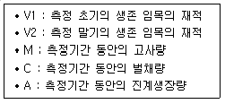
- V2 - V1
- V2 + C - V1
- V2 + C - A - V1
- V2 + M- C - A - V1
(정답률: 54%)
42. 다음과 같은 그림으로 분석이 가능한 임분구조가 아닌 것은?
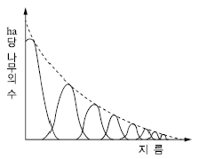
- 동령림
- 택벌림
- 이령림
- 영급이 다양한 임분
(정답률: 65%)
43. 산림문화⋅휴양에 관한 법률에 의한 산림문화 자산에 대한 설명으로 다음 ( ) 안에 들어갈 내용으로 옳지 않은 것은?
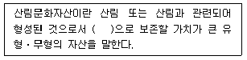
- 사회적
- 생태적
- 경관적
- 정서적
(정답률: 57%)
44. 회귀년에 대한 설명으로 옳은 것은?
- 임목이 실제로 벌채되는 연령이다.
- 택벌을 실시한 일정 구역에 또 다시 택벌하기까지의 기간이다.
- 보속작업에서 작업급에 속하는 모든 임분을 벌채하는 데 소요되는 기간이다.
- 임분이 처음 성립하여 생장하는 과정에 있어 성숙기에 도달하는 계획상의 연수이다.
(정답률: 74%)
45. 임업소득이 5백만원이고 임가소득이 1천만원일 때 임업의존도는?
- 0.5%
- 5%
- 50%
- 200%
(정답률: 67%)
46. 수간석해에서 원판측정 방법에 해당하는 것은?
- 표준목법
- 수고곡선법
- 직선연장법
- 원주등분법
(정답률: 55%)
47. 임지의 평가 방법이 아닌 것은?
- 수익가법
- 비용가법
- 환원가법
- 기망가법
(정답률: 45%)
48. 순토측고기를 사용하여 임목의 수고를 측정할 때 올바른 계산식은?
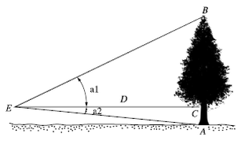
- (tan a1 + tan a2) ×D
- (tan a1 - tan a2) ×D
- (cos a1 + cos a2) ×D
- (cos a1 - cos a2) ×D
(정답률: 63%)
49. 임업경영의 비용을 조림비, 관리비, 지대, 채취비로 구분할 때 관리비에 속하는 것은?
- 벌목비
- 감가상각비
- 목재 운반비
- 묘목 구입비
(정답률: 65%)
50. 다음 조건에서 시장가역산식을 이용한 임목가는?
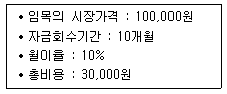
- 20,000원
- 50,000원
- 70,000원
- 80,000원
(정답률: 31%)
51. 투자효율의 결정방법 중 화폐의 시간적 가치를 고려하지 않는 것은?
- 순현재가치법
- 투자이익율법
- 수익비용율법
- 내부투자수익율법
(정답률: 38%)
52. 자본장비도에 대한 설명으로 옳지 않은 것은?
- 자본장비율이라고도 한다.
- 1인당 소득은 자본장비도와 자본효율에 의해서 정해진다.
- 다른 요소에 변화가 없을 떄 자본이 많아지면 자본효율이 커진다.
- 자본장비도는 경영의 총자본을 경영에 종사하는 수로 나눈 값을 말한다.
(정답률: 50%)
53. 임업이율의 성격이 아닌 것은?
- 평정이율
- 장기이율
- 자본이자
- 실질적 이율
(정답률: 65%)
54. 산림경영계획을 위한 지황조사에서 유효토심의 구분 기준으로 옳은 것은?
- 천 : 유효토심 20cm 미만
- 중 : 유효토심 20~30cm
- 경 : 유효토심 30~60cm
- 심 : 유효토심 60cm 이상
(정답률: 55%)
55. 다음 조건에서 정액법에 의한 감가상각비는?
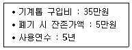
- 5만원/년
- 6만원/년
- 7만원/년
- 8만원/년
(정답률: 71%)
56. 평균생장량이 최대가 되는 때를 벌기령으로 결정하는 것은?
- 수익률 최대의 벌기령
- 재적수확 최대의 벌기령
- 화폐수익 최대의 벌기령
- 토지순수익 최대의 벌기령
(정답률: 72%)
57. 우리나라 원목의 말구직경을 측정하는 방법으로 옳은 것은?
- 수피를 포함한 길이 검척 내의 최대 직경으로 한다.
- 수피를 포함한 길이 검척 내의 최소 직경으로 한다.
- 수피를 제외한 길이 검척 내의 최대직경으로 한다.
- 수피를 제외한 길이 검척 내의 최소직경으로 한다.
(정답률: 52%)
58. 다음 그림에서 이익에 해당하는 것은?
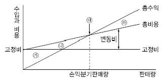
- 삼각형 면적 ㉮
- 삼각형 면적 ㉯
- 삼각형 면적 ㉱
- 점 ㉰에서의 수입
(정답률: 77%)
59. 총생장량, 평균생장량, 연년생장량간의 관계에 대한 설명으로 옳지 않은 것은?
- 평균생장량과 연년생장량 두 곡선이 만나기 전에는 연년생장량이 더 크다.
- 연년생장량곡선은 총생장량곡선이 변곡점에 이르는 시점에서 최고점에 도달한다.
- 평균생장량곡선은 원점을 지나는 직선이 총 생장량곡선과 접하는 시점에서 최고점에 도달한다.
- 평균생장량과 연년생장량 두 곡선은 충생장량 곡선이 최고에 도달하는 시점에서 서로 만난다.
(정답률: 48%)
60. 자연휴양림 안에 설치할 수 있는 시설의 종류가 아닌 것은?
- 위생시설
- 체육시설
- 안정시설
- 편익시설
(정답률: 59%)
4과목: 임도공학
61. 임도시공 시 굴착 및 운반작업 수행이 가장 어려운 장비는?
- 불도저
- 파워셔블
- 스크레이퍼
- 모터그레이더
(정답률: 66%)
62. 임도의 유지관리를 위한 시설에 대한 설명으로 옳은 것은?
- 빗물받이는 주로 절토 비탈면 위에 설치한다.
- 옆도랑에 쌓인 토사는 답압하여 길어깨로 사용한다.
- 평시에 유량이 많은 지역에는 세월시설을 설치하여 관리한다.
- 종단기울기와 절취면의 토질에 따라 적절한 간격으로 횡단배수구를 설치하여 표면 유출수가 신속히 배수되도록 한다.
(정답률: 56%)
63. 산악지대의 임도망 구축에 있어 지형에 대응한 노선선정 방식에 대한 설명으로 옳지 않은 것은?
- 산정부에 배치되는 임도는 순환식 노선이 좋다.
- 능선임도는 임도노선 배치방식 중 건설비가 가장 적게 든다.
- 계곡임도는 계곡보다 약간 위의 사면에 설치하는 것이 좋다.
- 급경사의 긴 비탈면에 설치하는 사면임도는 대각선 방식이 적당하다.
(정답률: 49%)
64. 임도의 대피소 설치 기준으로 옳은 것은?
- 너비 : 5m 이상
- 간격 : 100m 이내
- 유효길이 : 10m 이상
- 종단 기울기 : 5% 이하
(정답률: 68%)
65. 임도공사 시 기초작업에서 지반의 허용지지력이 가장 큰 것은?
- 연 암
- 잔모래
- 연한 점토
- 자갈과 거친 모래
(정답률: 63%)
66. 임도의 평면선형에서 곡선을 설치하지 않아도 되는 기준은?
- 내각 25° 이상
- 내각 55° 이상
- 내각 90° 이상
- 내각 155° 이상
(정답률: 76%)
67. 1,000ha의 산림경영지에 적정임도밀도가 20m/ha라 한다면 평균집재거리는?
- 62.5m
- 125m
- 250m
- 500m
(정답률: 35%)
68. 임도의 종류별 설계속도 기준으로 옳은 것은?
- 간선임도 : 40~30km/시간
- 간선임도 : 40~20km/시간
- 지선임도 : 30~10km/시간
- 지선임도 : 20~10km/시간
(정답률: 64%)
69. 임도의 노체를 구성하는 기본적인 구조가 아닌 것은?
- 노상
- 기층
- 표층
- 노층
(정답률: 74%)
70. 토사지역에서 절토 경사면의 설계 기준은?
- 1 : 0.3~0.8
- 1 : 0.5~0.8
- 1 : 0.5~1.2
- 1 : 0.8~1.5
(정답률: 54%)
71. 레벨을 이용한 고저측량 시 기고식야장법에 의한 지반고를 구하는 방법은?
- 기계고 + 전시
- 기계고 - 전시
- 기계고 + 후시
- 후시 - 기계고
(정답률: 62%)
72. 임도 설계 시 횡단면도를 작성하는 기준 축척은?
- 1/100
- 1/200
- 1/500
- 1/1,000
(정답률: 62%)
73. 산림의 경계선을 명백히 하고 그 면적을 확정하기 위해 실시하는 측량은?
- 시설측량
- 세부측량
- 주위측량
- 산림구획측량
(정답률: 48%)
74. 임도의 곡선반지름이 30m, 설계속도가 30km/h일 때 자동차의 원활한 통행을 위한 완화구간의 길이는?
- 약 30m
- 약 32m
- 약 36m
- 약 40m
(정답률: 31%)
75. 옹벽에 대한 설명으로 옳지 않은 것은?
- 부벽식 옹벽은 토압을 받는 쪽에 부벽을 만드는 옹벽이다.
- 반중력식 옹벽은 철근을 보강하며, 기초가 견고하지 못한 곳에 시공한다.
- L형 옹벽은 철근콘크리트 형식으로 자중과 뒷 채움한 토사의 무게를 이용한다.
- 중력식 옹벽은 무절콘크리트로서 자중으로 토압을 견디며 기초가 견고한 곳에 시공한다.
(정답률: 41%)
76. 가선집재와 비교하여 트랙터를 이용한 집재작업의 특징으로 거리가 먼 것은?
- 기동성이 높다.
- 작업이 단순하다.
- 임지 훼손이 적다.
- 경사가 큰 곳에서 작업이 불가능하다.
(정답률: 75%)
77. 모르타르뿜어붙이기공법에서 건조⋅수축으로 인한 균열을 방지하는 방법이 아닌 것은?
- 응결완화제를 사용한다.
- 뿜는 두께를 증가시킨다.
- 물과 시멘트의 비를 작게 한다.
- 사용하는 시멘트의 양을 적게 한다.
(정답률: 56%)
78. 산지 경사면과 임도 시공기면과의 교차선으로 임도시공 시 절토와 성토작업을 구분하는 경계선은?
- 영선
- 시공선
- 중심선
- 경사선
(정답률: 73%)
79. 임도의 횡단선형을 구성하는 요소가 아닌 것은?
- 길어깨
- 옆도랑
- 차도나비
- 곡선반지름
(정답률: 65%)
80. 측선 AB의 방위각이 45°, 측선 BC의 방위각이 130°일 때 교각은?
- 45°
- 75°
- 85°
- 175°
(정답률: 55%)
5과목: 사방공학
81. 황폐계류에 대한 설명으로 옳지 않은 것은?
- 유량이 강우에 의해 급격히 증감한다.
- 유로연장이 비교적 길고 하상 기울기가 완만하다.
- 토사생산구역, 토사유과구역, 토사퇴적구역으로 구분된다.
- 호우가 끝나면 유량은 급격히 감소되고 모래와 자갈의 유송은 완전히 중지된다.
(정답률: 58%)
82. 유역면적이 5km2이고, 비유량이 12m3/sec/km2일 때 최대홍수유량은?
- 30m3/sec
- 60m3/sec
- 90m3/sec
- 120m3/sec
(정답률: 75%)
83. 찰쌓기에서 지름 약 3cm의 PVC파이프로 물빼기구멍을 설치하는 기준은?
- 0.5~1m2마다 1개씩 설치한다.
- 2~3m2마다 1개씩 설치한다.
- 3~5m2마다 1개씩 설치한다.
- 5~5.5m2마다 1개씩 설치한다.
(정답률: 63%)
84. 계상에서 유수의 소류력이 최소로 되고 안정기울기가 최대로 되는 기울기는?
- 편류기울기
- 평형기울기
- 보정기울기
- 홍수기울기
(정답률: 34%)
85. 황폐지 및 훼손지의 복구용 수종으로 가장 적합한 것은?
- 싸리류, 은행나무
- 아까시나무, 구상나무
- 상수리나무, 종비나무
- 오리나무류, 리기다소나무
(정답률: 55%)
86. 계류의 유속과 흐름방향을 조절할 수 있도록 둑이나 계안으로부터 돌출하여 설치하는 것은?
- 수제
- 구곡막이
- 바닥막이
- 기슭막이
(정답률: 70%)
87. 비탈면에서 분사식씨뿌리기에 사용되는 혼합재료가 아닌 것은?
- 비료
- 종자
- 전착제
- 천연섬유 네트
(정답률: 71%)
88. 산사태의 발생 원인에서 지질적 요인이 아닌 것은?
- 절리의 존재
- 단층대의 존재
- 붕적토의 분포
- 지표수의 집중
(정답률: 67%)
89. 평균유속 0.5m/s로 5초 동안에 10m3의 물을 유송하는 수로의 횡단면적은?
- 2m2
- 4m2
- 10m2
- 20m2
(정답률: 50%)
90. 땅깎기 비탈면의 안정과 녹화를 위한 시공 방법으로 옳지 않은 것은?
- 경암 비탈면은 풍화⋅낙석 우려가 많으므로 새심기공법이 적절하다.
- 점질성 비탈면은 표면침식에 약하고 동상⋅붕락이 많으므로 떼붙이기 공법이 적절하다.
- 모래층 비탈면은 절토공사 직후에는 단단한 편이나 건조해지면 붕락되기 쉬우므로 전면적 객토가 좋다.
- 자갈이 많은 비탈면은 모래가 유실 후, 요철면이 생기기 쉬우므로 떼붙이기보다 분사파공공법이 좋다.
(정답률: 50%)
91. 사방사업 대상지 유형 중 황폐지에 속하는 것은?
- 밀린땅
- 붕괴지
- 민둥산
- 절토사면
(정답률: 77%)
92. 다음 설명에 해당하는 산지사방 공법은?
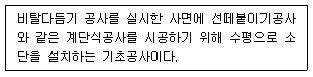
- 흙막이
- 단쌓기
- 단끊기
- 바자얽기
(정답률: 52%)
93. 화성암은 화학적으로 어떤 성분함량에 따라 산성암, 중성암, 염기성암으로 구분되는가?
- K2O
- SiO2
- Al2O3
- Fe2O3
(정답률: 70%)
94. 사방댐에서 대수면에 해당하는 것은?
- 방수로 부분
- 댐의 천단부분
- 댐의 하류측 사면
- 댐의 상류측 사면
(정답률: 62%)
95. 사방댐에 설치하는 물받침에 대한 설명으로 옳지 않은 것은?
- 앞댐, 막돌놓기 등의 공사를 함께 한다.
- 사방댐 본체나 측벽과 분리되도록 설치한다.
- 방수로를 월류하여 낙하하는 유수에 의해 대수면 하단이 세굴되는 것을 방지한다.
- 토석류의 충돌로 인해 발생하는 충격이 사방댐 본체와 측벽에 바로 전달되지 않도록 한다.
(정답률: 44%)
96. 해안사방에서 사초심기공법에 관한 설명으로 옳지 않은 것은?
- 망구획 크기는 2 ×2m 구획으로 내부에도 사이심기를 한다.
- 식재하는 사초는 모래의 퇴적으로 잘 말라죽지 않는 초종으로 선택한다.
- 다발심기는 사초 30~40포기를 한다발로 만들어 30~50cm 간격으로 심는다.
- 줄심기는 1~2주를 1열로 하여 주간거리 4~5cm, 열간거리 30~40cm가 되도록 심는다.
(정답률: 60%)
97. 비탈다듬기공사를 설계할 때 유의사항으로 옳지 않은 것은?
- 비탈면의 수정 기울기는 최대 35° 전후로 한다.
- 기울기가 급한 곳에서는 산비탈돌쌓기로 조정한다.
- 토양퇴적층의 두께가 3m 이상일 때는 비탈흙막이를 설계한다.
- 전체 대상지를 조사하고, 절취량은 다듬기의 면적에 평균 높이를 곱하여 산출한다.
(정답률: 33%)
98. 선떼붙이기공법을 1급부터 9급까지 구분하는 기준은?
- 수평단길이 1m당 떼의 사용매수
- 수직단길이 1m당 떼의 사용매수
- 수직단면적 1m2당 떼의 사용매수
- 수평단면적 1m2당 떼의 사용매수
(정답률: 43%)
99. 강우에 의해 토층이 포화상태가 되어 경사지 전면에 걸쳐 얇은 층으로 흙 입자가 이동하는 침식은?
- 우격침식
- 누구침식
- 구곡침식
- 면상침식
(정답률: 69%)
100. 파종녹화공법에서 파종량(W)을 구하는 식으로 옳은 것은? (단, S : 평균입수, P : 순량율, B : 발아율, C : 발생기대본수)
- W = C ×S ×P ×B
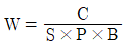
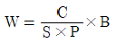
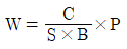
(정답률: 76%)